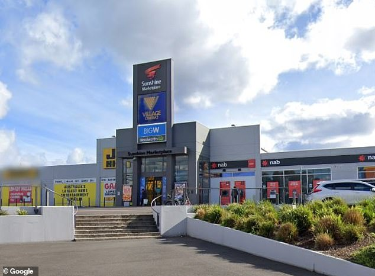

Our Branches
Colombo
Colombo Store:
Located in the heart of the city, our Colombo store is our flagship location. Offering a wide range of products, we specialize in online shopping, providing customers with the convenience of browsing and purchasing items from the comfort of their homes. Additionally, our Colombo store features a pickup option for online orders, allowing customers to conveniently collect their purchases at their preferred time.
Halawatha
Halawatha Store:
Nestled in the serene surroundings of Halawatha, our third store offers a unique shopping experience. While maintaining our commitment to quality and customer satisfaction, this store caters to the local community, providing a range of essential products and services. Whether you're in need of everyday essentials or seeking something special, our Halawatha store is here to serve you with warmth and hospitality.
Matara
Matara Store:
Our Matara store serves as our hub for importing groceries and vegetables. Situated in a bustling area, this store ensures that our customers have access to the freshest produce sourced from local and international markets. With a focus on quality and variety, we strive to meet the diverse needs of our customers, providing them with the finest ingredients for their culinary endeavors.
Our Services
| Service | Description | Availability |
|---|---|---|
| Delivery | We offer delivery services for all orders | Available |
| Catering | We provide catering services for events and parties. | Available |
| Party Planning | Our team can help you plan and organize your party. | Available |
| Online Odering | You can order your groceries online and pick them up in-store. | Available |
Our Story
Grocies began as a modest venture, a seed planted by a passionate group of food enthusiasts. Their vision was simple: to create a haven for everyone seeking quality groceries, friendly service, and a touch of warmth. With determination and a dash of spice, they opened their doors to the world
Our Mission
Our mission is to provide a seamless and delightful shopping experience for our customers. We achieve this by offering a wide range of fresh, locally sourced, and high-quality groceries. Our intuitive website simplifies the shopping process, allowing customers to easily browse, select, and order their favorite products from the comfort of their homes. We are committed to affordability, striving to keep prices competitive while maintaining the highest standards of quality. We believe that everyone deserves access to affordable, wholesome food.
Our Team
Our team is dedicated to delivering exceptional service. We collaborate closely, leveraging our diverse skills and expertise to achieve our mission. We value open communication, creativity, and a positive work environment. Together, we strive to make a meaningful impact and create memorable experiences for our customers.